Her bölümde tek bir hedef var: "Toplamı 7", "Farkı 4", "Çarpımı 24", "Bölümü 5". Çocuk sayı bloklarını yatay, dikey, çapraz veya serbest olarak eşleştirip avlar; sıra önemli değildir, tahtadaki her grup hedefi sağlar ve bölüm sonunda eşleşmeyen tek bir blok kalmaz. 5 gün × 6 bölüm, günde ~60 dakika, toplama → çıkarma → çarpma → bölme → 10×10 büyük final.
https://github.com/ardaozkul/SAYI-AVCISI/raw/main/SAYI-AVCISI.apk
https://github.com/ardaozkul/SAYI-AVCISI/raw/main/apk/SAYI-AVCISI-release.apk
https://github.com/ardaozkul/SAYI-AVCISI/raw/main/apk/SAYI-AVCISI-debug.apk
Aşağıdaki ekran görüntüleri Android emülatöründe kurulu 2.0.0 APK içinden
adb screencap ile gerçek olarak alındı; bölümleri tools/capture-screenshots.mjs
(adb + uiautomator) gerçekten oynayarak üretti. Görüntülerin tamamı
docs/screenshots
klasöründedir.
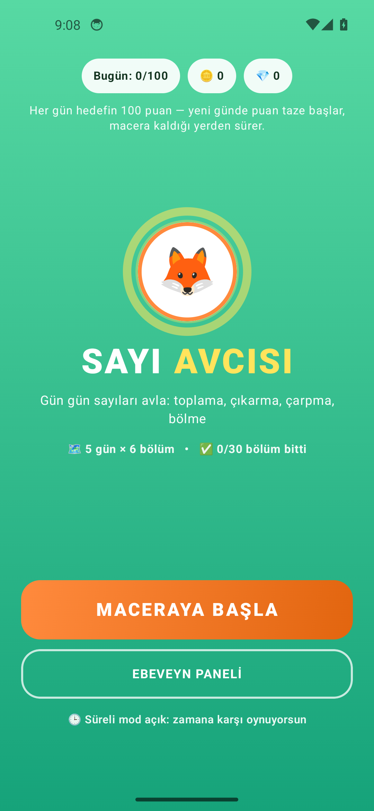
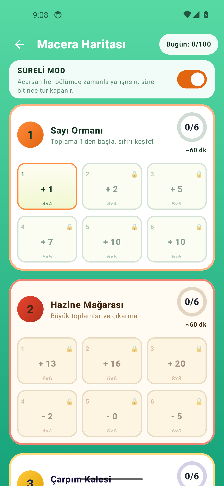
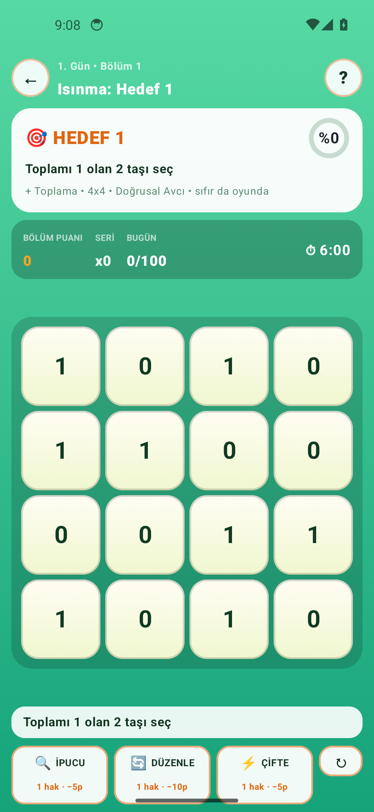
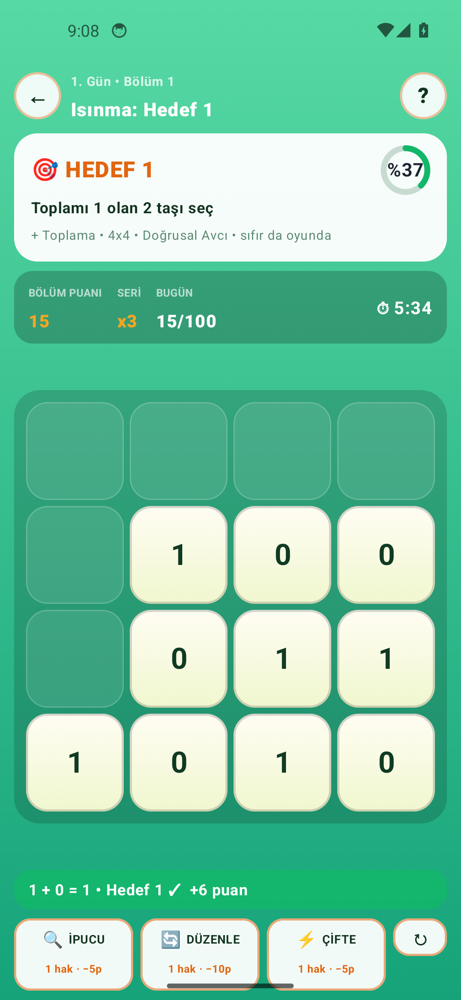
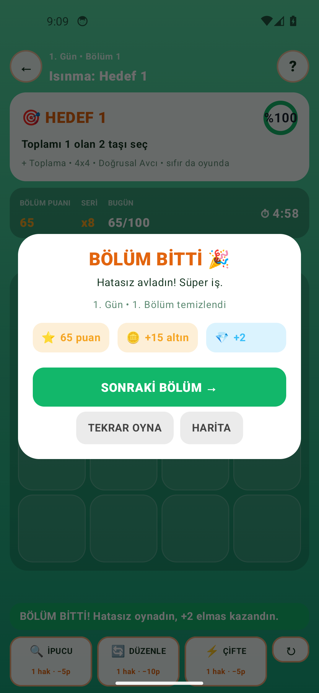
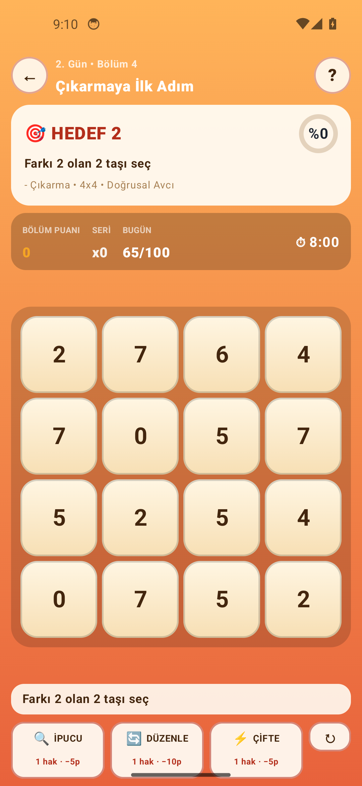
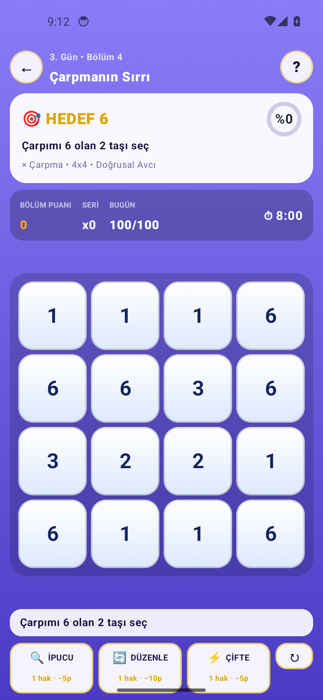
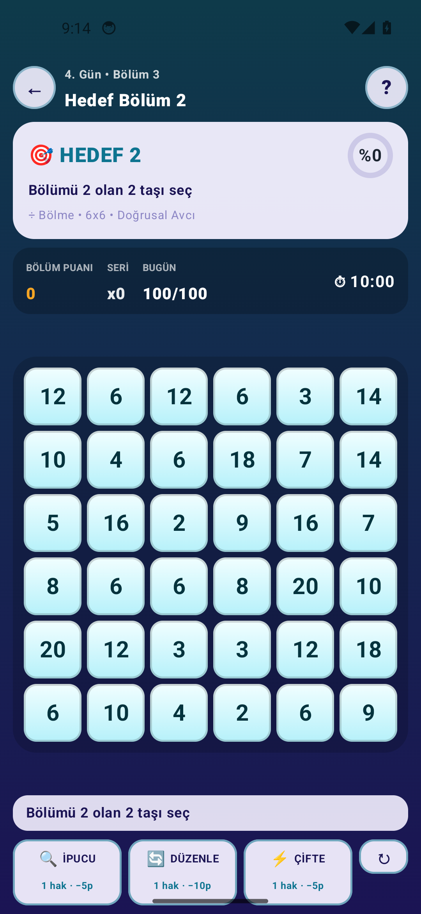
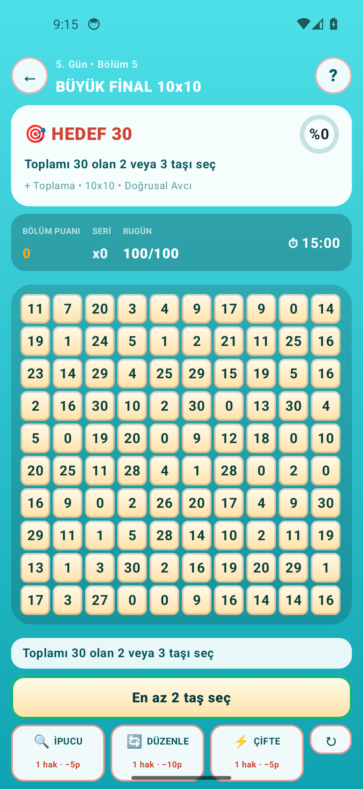
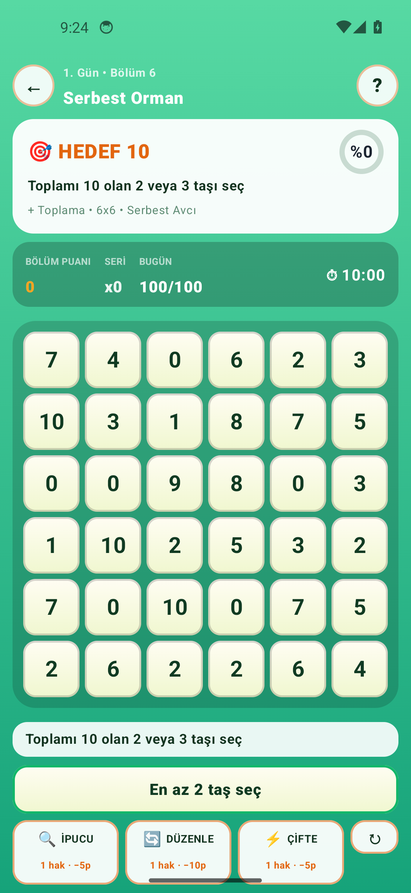
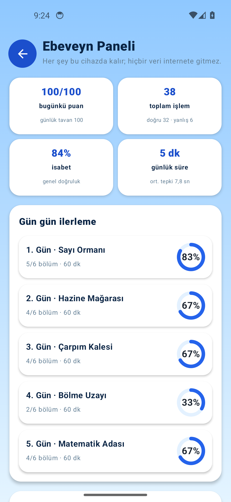
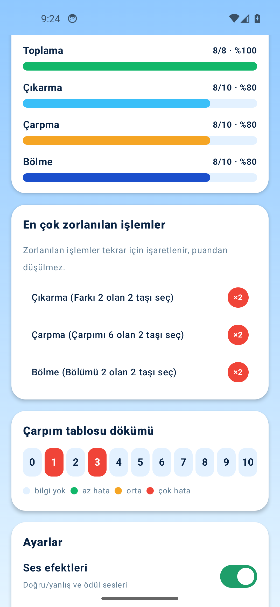
Telefon veya tabletin tarayıcısından indirme bağlantısına dokun:
github.com/ardaozkul/SAYI-AVCISI/raw/main/SAYI-AVCISI.apk
Android, mağaza dışı uygulamalarda bir kez "Bilinmeyen kaynaklardan yükleme" izni ister; onayla.
"Sayı Avcısı" simgesine dokun. İnternet gerekmez, tüm ilerleme cihazda saklanır.
|a−b|, bölme her iki yönde de denenir. Hangi taşa önce dokunduğun fark etmez.0+1=1, 5−5=0 (ikiz sayılar), 0×4=0, 0÷7=0; sıfıra bölme hiçbir bölümde üretilmez.Toplama: hedef 1 → 2 → 5 → 7 → 10, gün sonunda serbest mod (yön/mesafe yok). 4×4'ten 6×6'ya, sıfır dahil.
Büyük toplama + çıkarma başlangıcı: 13, 16, 20 (8×8); sonra farkı 2, farkı 0 (ikiz sayılar) ve farkı 5.
Çıkarma ustalığı + çarpma: farkı 4, 7, 10 (8×8); ardından çarpımı 6, 12 ve 24.
Çarpmanın tersi: çarpımı 36, bölümü 0 (sıfır gezegeni), 2, 5; çarpımı 48 (8×8) ve bölümü 6 (8×8). Kalansız bölme, sıfıra bölme yok.
Büyük final: toplamı 25, farkı 15, çarpımı 54, bölümü 8 (süre baskısı), 10×10 / 100 blok • ~15 dakika final ve serbest çarpım ödülü.
9−4 ile 4−9, 12÷4 ile 4÷12 aynı kabul.